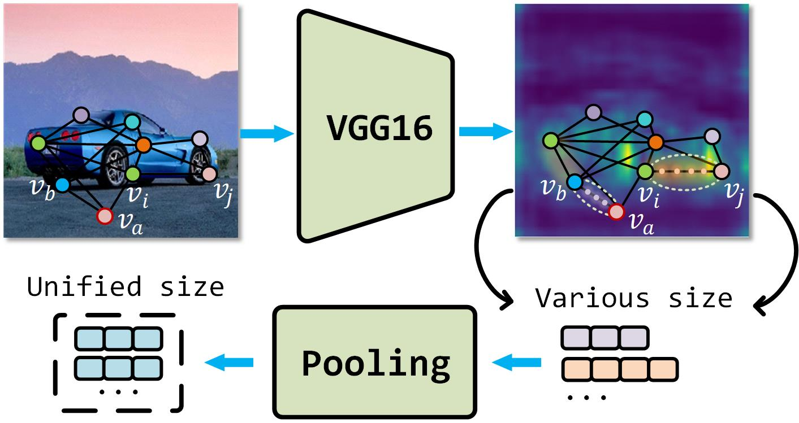
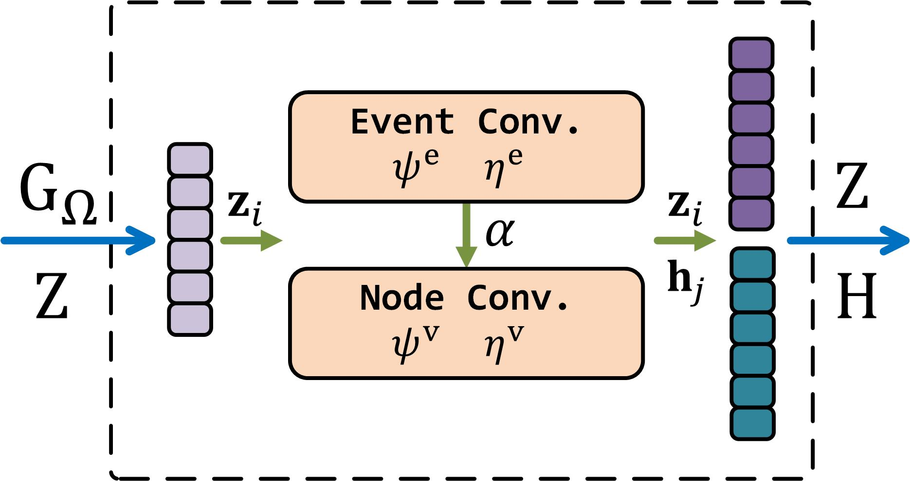
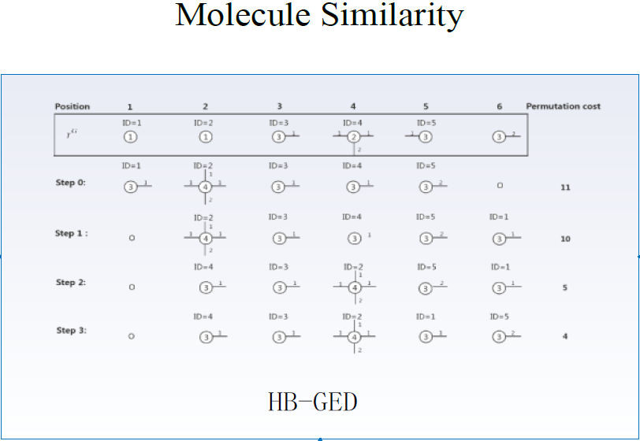
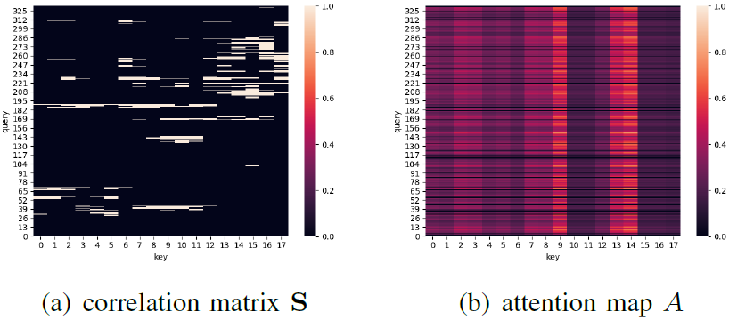
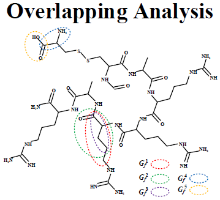
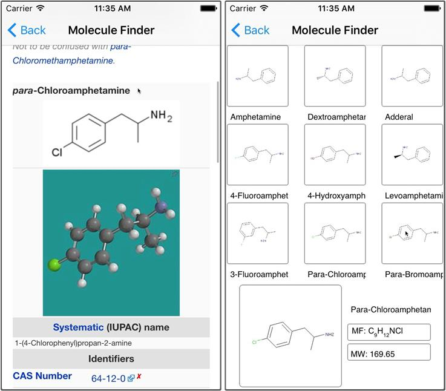
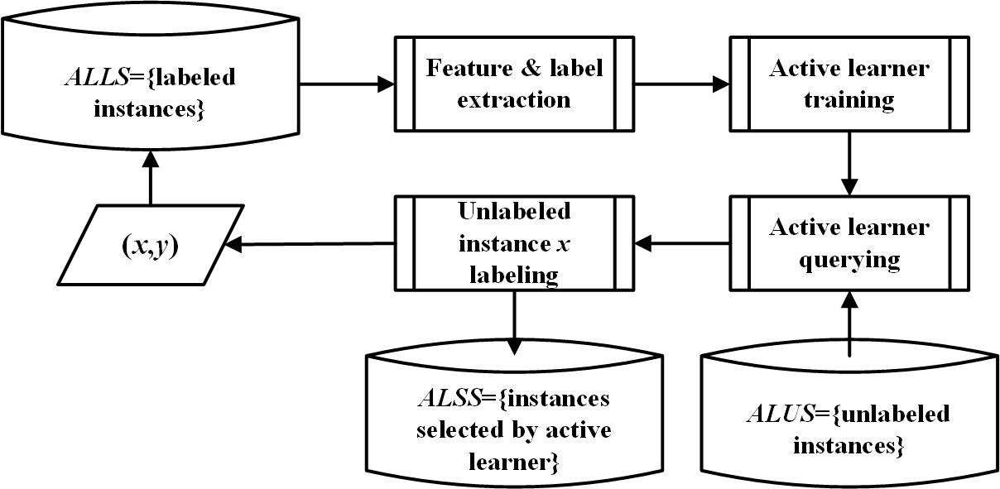
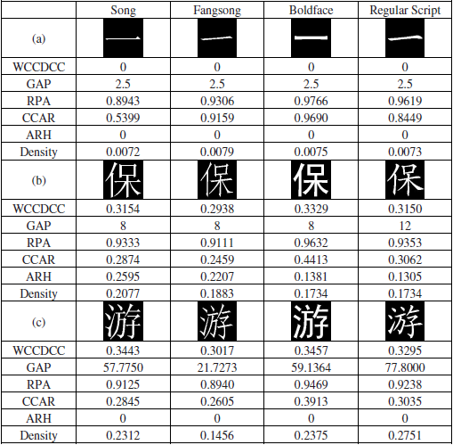
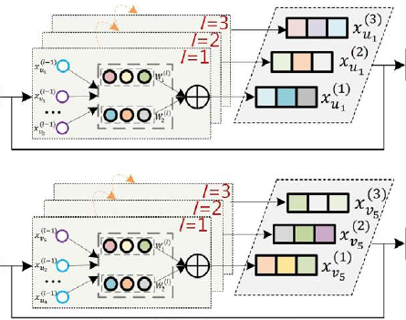
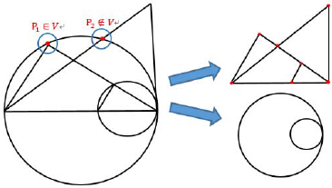

For full publication list, please go to Google Scholar.
|  |
Adaptive Edge Attention for Graph Matching with Outliers
Jingwei Qu, Haibin Ling, Chenrui Zhang, Xiaoqing Lyu, and Zhi Tang International Joint Conference on Artificial Intelligence (IJCAI), 2021. [pdf] [code] [project] |
|  |
Understanding Multivariate Drug-Target-Disease Interdependence via Event-Graph
Jingwei Qu, Bei Wang, Zhixun Li, Xiaoqing Lyu, and Zhi Tang IEEE International Conference on Bioinformatics and Biomedicine (BIBM), 2021. [paper] |
|  |
Doc-To-Doc Recommender For Medical Literature With Similarity Of Molecule Graphs
Jingwei Qu, Zhixuan Jing, Xiangbin Li, Yang Yu, and Xiaoqing Lyu IEEE International Conference on Bioinformatics and Biomedicine (BIBM), 2021. [paper] |
|  |
Attention-enhanced Graph Cross-convolution for Protein-Ligand Binding Affinity Prediction
Xianbing Feng*, Jingwei Qu*, Tianle Wang, Bei Wang, Xiaoqing Lyu, and Zhi Tang (*Equal contribution) IEEE International Conference on Bioinformatics and Biomedicine (BIBM), 2021. [paper] |
|  |
A Retrieval System of Medicine Molecules Based on Graph Similarity
Jingwei Qu, Xiaoqing Lyu, Chengcui Zhang, Penghui Sun, Xin Li, Bei Wang, and Zhi Tang, IEEE MultiMedia, 26(4): 17-27, 2019. [paper] |
|  |
PharmKi: A Retrieval System of Chemical Structural Formula Based on Graph Similarity
Jingwei Qu, Xiaoqing Lyu, Chengcui Zhang, Penghui Sun, Bei Wang, and Zhi Tang, IEEE Conference on Multimedia Information Processing and Retrieval (MIPR), 2018. [pdf] |
|  |
Improving PGF Retrieval Effectiveness with Active Learning
Jingwei Qu, Xiaoqing Lyu, Songping Fu, and Zhi Tang, International Conference on Pattern Recognition (ICPR), 2016. [pdf] |
|  |
A Method of Density Analysis for Chinese Characters
Jingwei Qu, Xiaoqing Lyu, Lu Liu, Zhi Tang, and Yongtao Wang CCF International Conference on Natural Language Processing and Chinese Computing (NLPCC), 2014. [pdf] |
|  |
GNDD: A Graph Neural Network-Based Method For Drug-Disease Association Prediction
Bei Wang, Xiaoqing Lyu, Jingwei Qu, Haowen Sun, Zehua Pan, and Zhi Tang IEEE International Conference on Bioinformatics and Biomedicine (BIBM), 2019. [paper] |
|  |
Plane Geometry Figure Retrieval Based On Bilayer Geometric Attributed Graph Matching
Lu Liu, Xiaoqing Lyu, Songping Fu, Jingwei Qu, Liangcai Gao, and Zhi Tang International Conference on Pattern Recognition (ICPR), 2014. [pdf] |